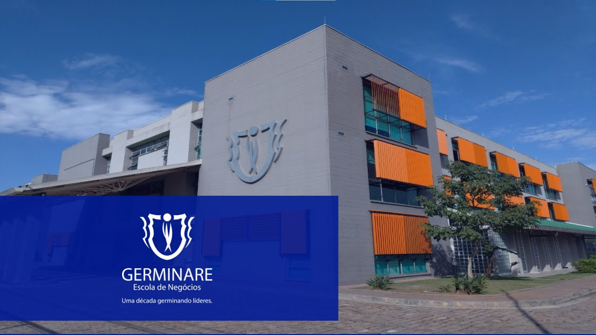

Bairro Alto da Lapa
O Alto da Lapa é um bairro no nobre do distrito Lapa, na cidade de São Paulo. Foi contruido na década de 1920 pela companhia City. Se situa no sudoeste do bairro da Lapa e é caracterizado pelo verde, devido a grande concentração de arvores e praças.
Saiba mais.
Sobre o autor
Meu nome é Enzo Matias, eu tenho 15 anos e estou criando esse site com o objetivo de mostrar para que as pessoas possam ver um pouco de como é o lugar onde eu moro.
Conheça o autor.

Instituto Germinare
Este site foi produzido por um aluno do Instituto Germinare. Sendo um dos trabalhos pedidos pela Academia PicPay.
Conheça o instituto.
Para acessar mais imagens do Alto da Lapa, acessae a página
Galeria